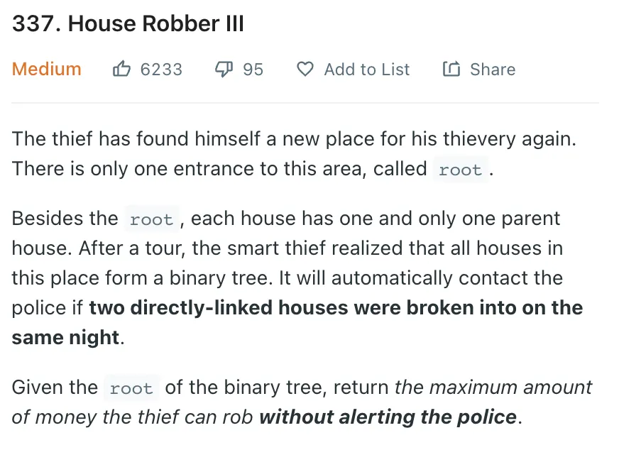
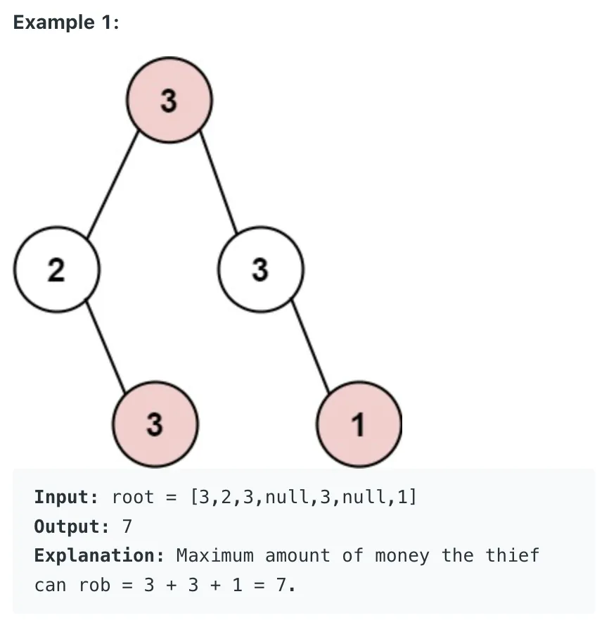
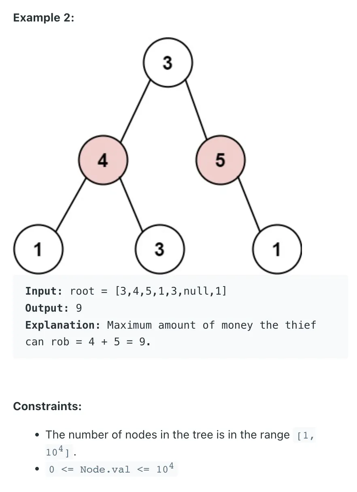

337. House Robber III
考過的公司：Asked by: Amazon, Google
Question



先自己想想看 🤔Try it yourself first 🤔
✍🏽 My Solution
Runtime: 2 ms, faster than 49.46% of Java online submissions for House Robber III.
Memory Usage: 44.4 MB, less than 56.29% of Java online submissions for House Robber III.
class Solution {
public int rob(TreeNode root) {
int[] money = postorder(root);
return Math.max(money[0], money[1]);
}
private int[] postorder(TreeNode root) {
if (root == null) {
return new int[]{0, 0};
}
int[] leftMoney = postorder(root.left);
int[] rightMoney = postorder(root.right);
int[] money = new int[2];
money[0] = Math.max(leftMoney[0], leftMoney[1]) + Math.max(rightMoney[0], rightMoney[1]);
money[1] = leftMoney[0] + rightMoney[0] + root.val;
return money;
}
}
🧠 Thought Process
- Why did I choose this particular implementation?
- 樹形DP基於樹這種數據結構上做狀態推導，一般來說都是由下往上，子節點推導父節點狀態，基於後序遍歷來實現
- 定義狀態：用 money[2] 表示每個節點的狀態，偷跟不偷
-
狀態轉移方程：
-
不偷：那么我们可以继续抢左右子节点，当然也可以不抢。抢不抢取决于哪个价值更大。
root.money[0] =
Math.max(leftMoney[0], leftMoney[1]) + Math.max(rightMoney[0], rightMoney[1]); -
偷：那么我们不能继续抢其左右子节点
root.money[1] =
leftMoney[0] + rightMoney[0] + root.val;
-